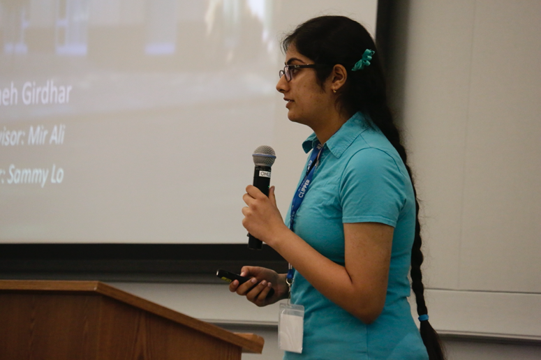
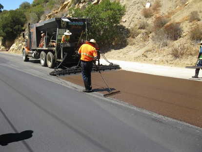
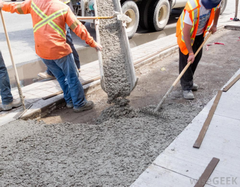
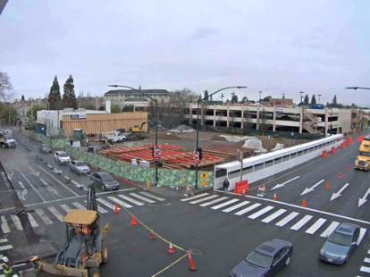

Engineering Internship
San Francisco Metropolitan Transportation Commission

OUTCOMES
- Developed detailed AutoCAD city road diagrams and used Crossroads software to collect and edit collision and accident data
- Conducted weekly field surveys with my supervisor. Collaborated with 10+ public works engineers daily
- Weekly inspected road/sidewalk development and the $65 million Hayward Library Project
- Presented work at final showcase in San Francisco for a panel of judges and bay-area-wide intern cohort

Road Project
- Inspected roads to see what kind of repair they needed
- Depending on the damage, different types of repair are needed
- Such as micro surfacing, slurry seal
- For example, micro surfacing is a mixture of water, asphalt emulsion, aggregate, and chemical additives
- Used when the road has minor damage

Sidewalk Project
- Inspected sidewalks to be rebuilt
- Observed how sidewalks are built

Library Project
- 3 floors. Mostly glass windows, State of the art, Green, 100% solar powered, Rainwater recycling system